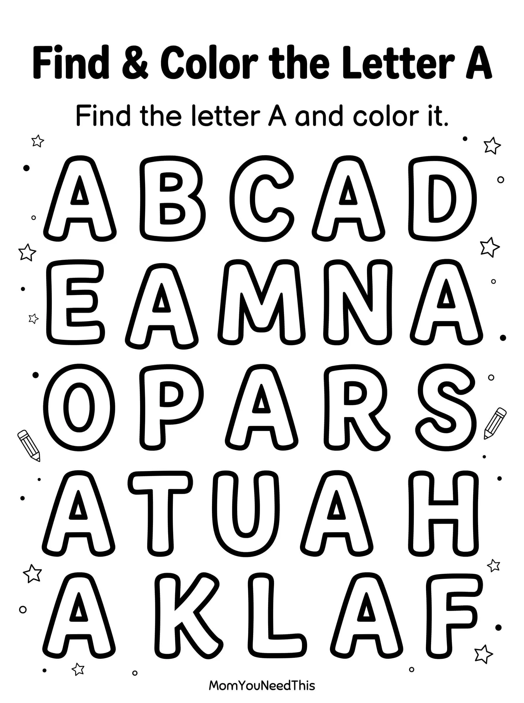

Find & Color Letter A Worksheet
Help your child practice recognizing the letter A with this fun printable Find & Color activity. Children search a page of mixed letters for every uppercase and lowercase A, then color each one they find — building alphabet recognition, focus, and early literacy skills. The letter a is the trickiest letter to hunt, because it wears two different lowercase shapes.
Quick Answer
This find and color letter A worksheet turns the alphabet's trickiest hunt into a game: children search a page of mixed letters and color every uppercase and lowercase A they spot. Letter A is sneaky because its lowercase form wears two different shapes. The activity builds letter A recognition and visual scanning for toddlers and preschoolers — free PDF, no signup.
At a Glance
- Ages: Toddlers and preschoolers
- Activity: Searching a page of mixed letters to find and color every letter A
- Skills: Letter A recognition and visual scanning
- Format: Printable activity page (PDF)
- Cost: Free, no signup
Letter A Find & Color Activity

🎨 Download Your Free Letter A Find & Color Activity
Find every uppercase and lowercase A hidden among the other letters, then color each A you find. The capital is a pyramid with a crossbar. The small a comes in two shapes — the double-story a printed in books, and the single-story a children write — and both count as finds on this hunt.
⬇️ Download Worksheet 🖨️ Print(opens in new tab)🎁 Free printable for toddlers & preschoolers
What Children Practice
⭐ Explore More Find & Color Letters
Continue practicing alphabet recognition with more Find & Color worksheets, matching activities, tracing pages, and alphabet coloring pages.
🔍 More Find & Color LettersMore Free Learning Resources
Discover printable alphabet activities, preschool worksheets, coloring pages, tracing pages, math activities, and more free educational resources.
🎁 View All Free Resources🔍 Hunting The Letter A: What To Watch For
A is the first letter of the alphabet and the most shape-shifting. The capital is unmistakable — two slanted lines meeting at a point, with a crossbar. But the lowercase a most books print (the double-story a, with its little roof) looks nothing like the single-story a children learn to write, and both shapes appear in real reading.
That makes this hunt the most valuable of the three: every A your child finds, in either lowercase shape, is proof they are matching the letter's identity rather than one memorized outline. The near-miss letters to talk about are o (no crossbar, no point), e and g — all round like the small a, all different letters.
After the hunt, count the finds together and sort them: how many capitals, how many double-story smalls, how many single-story smalls? Three tallies for one letter — a first, gentle lesson in how print really works.
🖨️ How to Use This Printable
Get started in minutes — everything here is free and made for busy parents.
- Download the printable. Tap the download button to save the free Find & Color Letter A file to your device.
- Print it out. Use any home printer and regular paper — cardstock works great for pages little hands will use again and again.
- Learn together. Sit with your child, follow the activity, and keep it playful. Short sessions work best.
- Explore more. Check the free printables linked below for your next activity.
❓ Find & Color Letter A FAQs
Is this Find & Color Letter A printable free?
Yes — every printable on MomYouNeedThis is 100% free to download and print. No signup, no payment, just tap the download button and print the letter A hunt as often as your child wants another round.
How do I use this alphabet printable?
Print the page and hunt together: say the letter A's name, show both of its lowercase shapes before starting, and color every A that turns up. Short, playful sessions work better than long lessons for little learners.
What literacy skills does this practice?
Letter recognition and visual discrimination above all — with a bonus no other letter offers: because small a has two printed shapes, this page teaches that a letter's identity survives a change of costume, an idea that underlies all later reading.
🔗 More Free Printables You’ll Love
Pair this printable with more free learning activities from the MomYouNeedThis library.
- 🔍 Free Find & Color Letter BFree printable find and color letter b activity for little learners.
- 🔍 Free Find & Color Letter CFree printable find and color letter c activity for little learners.
- 🔊 Free Letter A Sound MatchFree printable letter a sound practice for little learners.
- 🎨 Free Alphabet Coloring PagesFree printable letter a coloring pages for little learners.